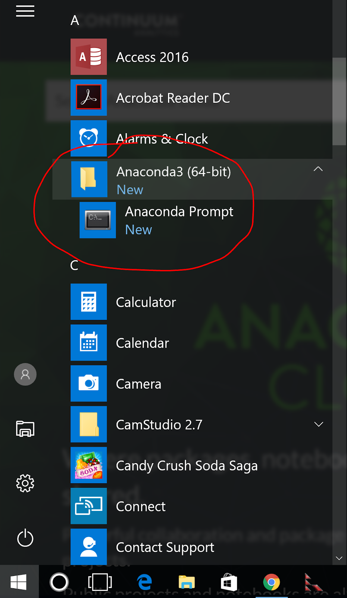
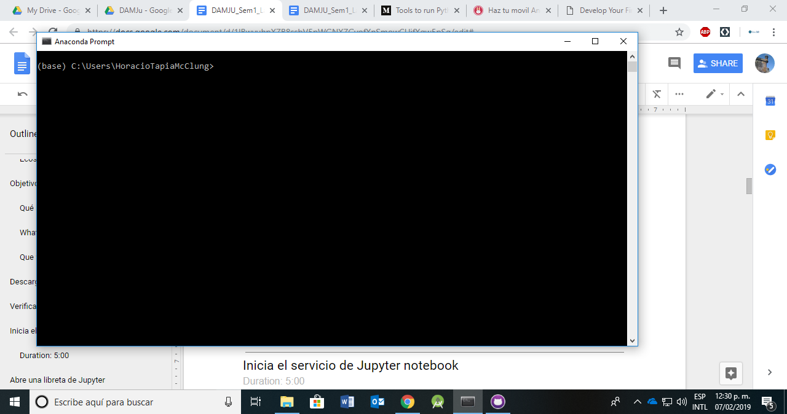
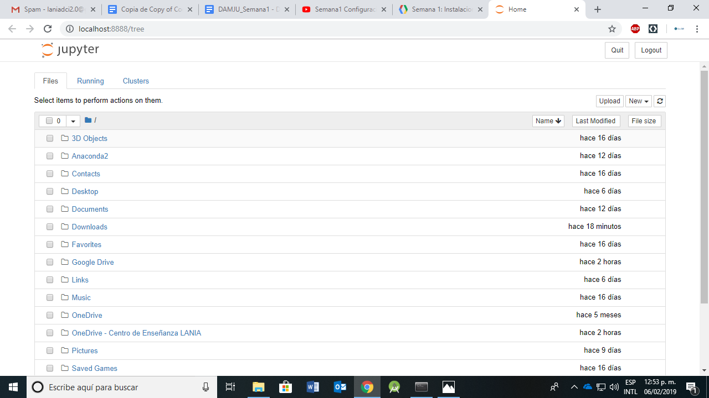
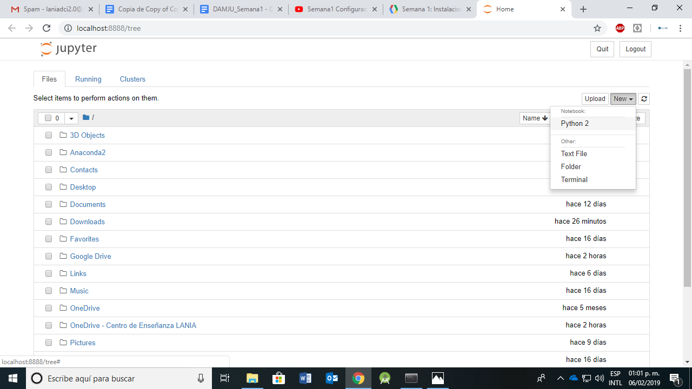
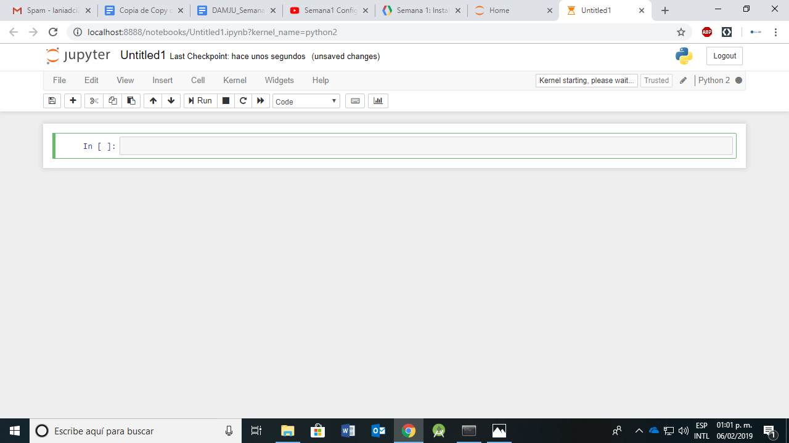

Ecosistema de desarrollo de Jupyter
Jupyter es un ecosistema de desarrollo y creación de documentos digitales basado en Python, llamados Libretas de Jupyter. Los documentos pueden contener información legible para los humanos así como contenido digital (código, ejecutable, etc) interpretado por una máquina.
La aplicación que permite editar y ejecutar libretas de Jupyter se conoce como Jupyter Notebook App. Esta semana aprenderemos como instalar y ejecutar diversas instancias de la aplicación para crear y editar libretas, a través de las cuales podremos interactuar con un dispositivo móvil
- Conocer el proceso de instalación y configuración del ecosistema de Jupyter en su computadora personal
- Conocer como iniciar el servicio de Jupyter
- Conocer como abrir una libreta de Jupyter
- Conocer como ejecutar código en una libreta de Jupyter
Qué haremos
Vamos a instalar y configurar las herramientas necesarias para contar con el ecosistema de Jupyter en su computadora personal |
|

What you'll learn
- Cómo instalar y configurar Jupyter en una computadora personal
- Como configurar el sistema para conectarse al dispositivo móvil
- Como interactuar con el dispositivo móvil usando Python
Que vamos a necesitar
- Una computadora personal con un sistema operativo funcional
- Conexión a internet
Utiliza el enlace siguiente para la descarga de Anaconda la versión de Python 2.7 apropiada para tu sistema operativo.
Ejecuta el programa que acabas de descargar y sigue las instrucciones de instalación.
En Windows, abre el menú de sistema y localiza el folder Anaconda2. |  |
Selecciona Anaconda Prompt y espera un momento. Una nueva ventana se abrirá donde pueden ingresar instrucciones. Si tu sistema operativo es alguna variante *NIX abre una terminal (consola). |  |
En la ventana que se abrió (o en la consola si no estás usando Windows), escribe el siguiente comando:
jupyter notebookDespués de unos minutos deberá abrirse una nueva ventana en su navegador de preferencia apuntando a la dirección http://localhost:8888. Si no se abre de manera automática utiliza el enlace anterior.
En su navegador verás algo similar a la imagen. Esta es la ventana inicial de la aplicación Jupyter Notebooks. Toma unos minutos para conocer el ambiente y familiarizarte con el contenido. Observa que en primer nivel tienes lo que es básicamente un navegador de archivos. |  |
En la ventana del navegador mostrando el árbol de documentos, busca el siguiente botón cerca de la esquina superior derecha:
Selecciona New y después Python 2

Esta acción abrirá una nueva pestaña con una libreta de Jupyter en blanco como la que se muestra en la siguiente imagen
El recuadro que aparece color verde con el texto In [ ] es una celda de código. Escribe el código siguiente en la celda y cuando termines presiona simultáneamente las teclas Alt+Enter
import sys
sys.platformAl ejecutar el código, el intérprete debe mostrar una línea con información del sistema operativo sobre el que se ejecuta la aplicación (win32, posix, linux, etc.). Si lograste ver el resultado, felicidades, has terminado la primera parte de la configuración de nuestro sistema.